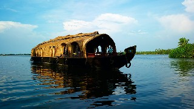
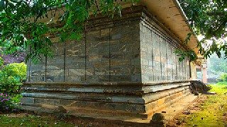
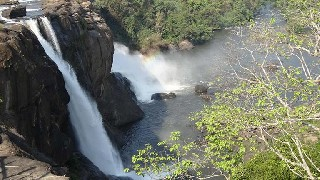

---GOD'S OWN COUNTRY---
Experience Kerala

Alappuzha
Alappuzha or Alleppey is the administrative headquarters of Alappuzha district in state of Kerala, India. The Backwaters of Alappuzha are one of the most popular tourist places
For conducted tours and backwater cruises in Alappuzha,
Contact the District Tourism Promotion Council (DTPC):
Ph: +91 477 2253308, 2251796
Email: info@dtpcalappuzha.com

Jainamedu Jain Temple, Palakkad
Temple timings: 0700 - 1030 hrs & 1700 - 1900 hrs
Nearest railway station: Palakkad, about 2 km
Nearest airport: Coimbatore International Airport (Tamil Nadu), about 70km | Calicut International Airport, about 100 km | Cochin International Airport, about 110 km

Athirappilly and Vazhachal Waterfalls in Thrissur
As you walk down the stone slabs that lead to the base of the Athirappilly waterfalls, a mysterious serenity overcomes you. It is Kerala's most famous and largest waterfall at over 80 ft high.
Getting there
Nearest railway station: Chalakudy, about 30 km away
Nearest airport: Cochin International Airport, about 53 km from Thrissur